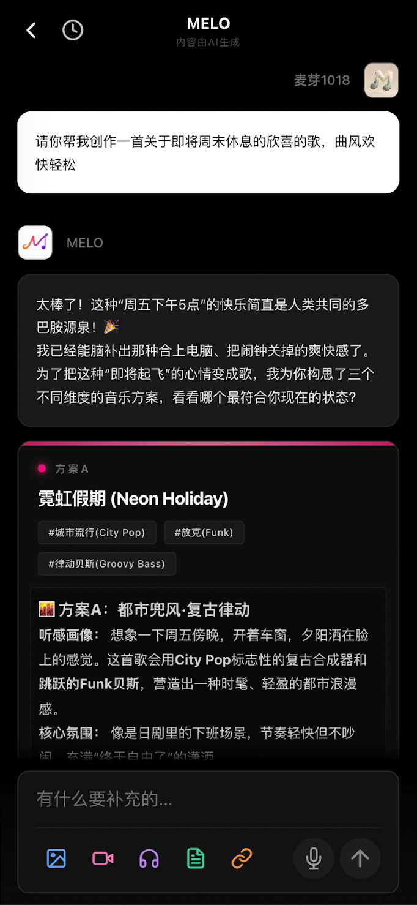
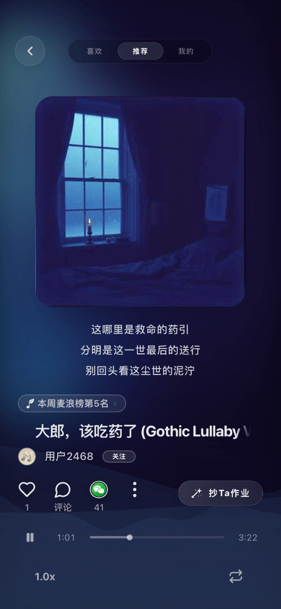

MELO 写歌看似零门槛？这四个坑我踩过才敢说
从高峰期排队卡生成、调式配器搞出假国风、上传音乐平台被打回，到整首歌平铺直叙没记忆点——踩过四个实坑之后，MELO 才真正从玩具变成能用的工具。
第一次打开 MELO 的官网那个界面的时候，我以为这就是个「输入一句话，等 AI 给你一首歌」的玩具工具。界面干干净净，按钮也没几个，写歌这件事听起来像是把 Prompt 往框里一贴就能交差。但我低估了 AI 音乐生成的复杂性——前后折腾了大半个月，四个实打实的坑踩下来，才敢说自己真正摸懂了这个工具的脾气。
坑一：生成卡了两分钟，我以为是死机，其实是排队
症状：晚上九点多点生成，进度条转了又转，一分钟过去了、两分钟过去了，界面还是显示「正在生成」。我点了刷新、切了后台、甚至杀进程重开，结果重新提交之后还是在那儿转。我差点以为自己号被封了，跑去翻MELO文档才发现——这不是 bug，是排队。
原因：MELO 的免费用户和会员共用生成算力池，但高峰期（晚上 8 到 12 点、周末全天）队列能排到几十上百条任务。免费用户没有算力倾斜，轮到你的时候可能已经是前面几十人之后了。另外两个容易被忽略的减速因素：提示词写得太细（50 行提示词比 10 行慢不是一星半点），以及同时开了太多标签页或 App 吃掉了浏览器/手机内存。
解法：先看 AI 音乐广场上别人的作品能不能正常加载——加载不了就是服务器整体故障，等几个小时就好；能加载但你自己慢，多半是排队。会员可以跳过大部分队列，免费用户就老老实实换个时间，早上或下午基本秒出。提示词先写短的跑通方向，再迭代细化，不要一上来就贴 50 行。一个端卡了就换另一个端试试，实在没装就去官方下载个网页版，网页端可能正空着。

坑二：加了古筝就叫国风？结果出来是一首 C 大调的四不像
症状：我给提示词里加了「古筝 + 琵琶 + 慢板」，满心期待出来一首古色古香的江南小曲，结果听起来就是普通流行歌加了个古筝背景——旋律走向完全是 C 大调七声音阶，古筝只是个装饰音，和电子鼓点打架打得厉害。
原因：我以为国风就是「加几个民乐乐器」，但 MELO 里的国风其实是五层系统——调式、旋律走向、配器、歌词意象、意境氛围，缺一不可。我只调了配器层，调式层还停留在默认的 C 大调七声音阶，旋律也是按流行歌的写法语无伦次。这种假国风是最常见的误区，就像穿了汉服但开口就是网络热梗——形式到位了但内核没跟上。
解法：五个层面一起调。调式明确说「用羽调式，凄美婉转」或「用宫调式，明亮典雅」，旋律指定「平缓流动，少突然跳音，每段结尾落在主音上」，配器之外歌词也别用「快递」「直播」这种太现代的词，意境要统一——要么高山流水空灵悠远，要么江南烟雨湿润婉约。MELO 对民族乐器有专项优化，但你得先把骨架搭对。
坑三：上传音乐平台审核被打回，说我这是纯 AI 生成
症状：写完一首自我感觉良好的歌，导了 WAV 母带，跑去 QQ 音乐开放平台注册音乐人、上传、填信息，信心满满点提交。结果 24 小时后邮件来了——审核不通过，疑似纯 AI 生成内容。我当时愣了，不是说会员作品版权归我吗？
原因：版权归你和平台愿不愿意上架是两回事。很多音乐平台对纯文字描述让 AI 生成一切的作品（没有人类参与作词作曲）持灰色态度，审核时发现词曲都不像人类写的就打回。另外踩过的小坑：WAV 母带采样率或位深如果和平台要求不符也会被拒，封面图必须是 1:1 方形且不低于 1000×1000，这些细节没注意到白跑一趟。
解法：自己写歌词 + MELO 作曲编曲，或者自己写旋律 + MELO 配编曲，这两种都能过审。实在想纯 AI 生成就在歌词里加几句自己的原创或做人工精修，别让审核一眼看出全是机器写的。导出 WAV 时用 MELO 默认的标准规格，一般不会有格式问题；封面别偷懒，找个图片生成工具出一张 1:1 的就行。审核没过也别慌，改完重提交就行，不是终审。

坑四：整首歌平铺直叙唱到一半，我自己都走神了
症状：第一次用 MELO 写长曲，我只写了一堆歌词加「3 分钟、流行风、女声」，结果出来的歌从头到尾编曲层次差不多，主歌没铺垫副歌没高潮，唱到两分钟我自己都在走神。副歌本来应该洗脑的，结果旋律和主歌没什么区别，听完记不住任何一段。
原因：我没给 AI 画路线图。只给一堆歌词和风格描述，AI 就会把整首歌当成一段来处理，每段情绪、节奏、编曲都差不多，自然没有记忆点。MELO 的结构标签（[Intro]、[Verse]、[Chorus]、[Bridge]、[Outro]）就是干这个的，但我一开始觉得「这么专业的标签我哪会写」，就跳过了。
解法：其实完全不用记专业术语，大白话理解就行——Intro 是摆 pose 的前奏、Verse 是唠嗑讲故事的主歌、Chorus 是全歌最洗脑的副歌、Bridge 是唱到一半拐个弯的桥段、Outro 是慢慢淡出的尾奏。主歌控制在 4 到 8 行别太长，副歌要短要狠 3 到 4 行最好记，千万别省略 Bridge——那是整首歌的情绪弯道，有了它歌曲才立体。标签格式是英文方括号，每段前标一次就够，别每句歌词前都贴一个。
防坑清单
- 高峰期（晚 8 到 12 点、周末）生成慢 = 排队，换时段或开会员跳过，不是死机
- 国风要调式 + 配器 + 旋律 + 意象 + 意境五层一起调，只加民乐 = 假国风
- 音乐平台审核要自己写歌词或精修，别纯文字描述全让 AI 来
- 结构标签是必选项，长曲没标签 = 平铺直叙没记忆点
- 一个端卡了就换另一个端试试，App、网页、小程序网络栈各有差异
知道这些坑之后，MELO 其实相当省心——它帮你把作曲编曲的技术门槛砸得稀碎，但你得知道往哪儿填砖。我踩过的这四个坑，每一个都花了至少大半天时间才摸明白，写下来给你们少走点弯路。这些排查思路和提示词示例我也整理了一份，GitHub、Gitee、GitCode 三个仓库都能拿到，方便随时查阅。毕竟写歌这件事，开心最重要，别被这些小问题扫了兴致。